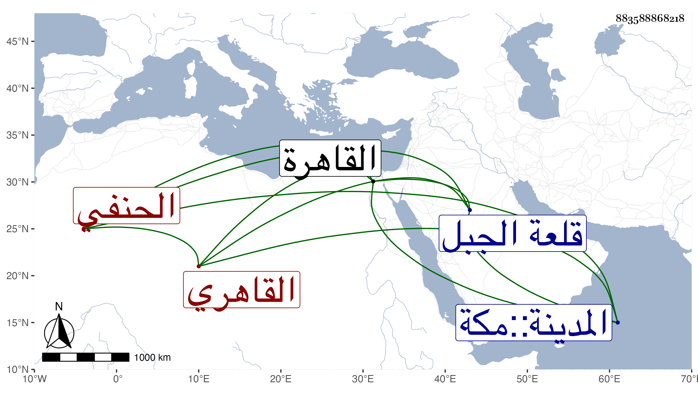

0902Sakhawi.DawLamic.ITO20230111-ara1.EIS1600.883588868218
Biography ID: 883588868218
307
أحمد بن محمد بن أبي بكر بن أحمد الشهاب القاهري الحنفي والد محمد الآتي ، ويعرف بابن الخازن وبخازن صهريج منجك لكون أبيه كان أمينا على حواصل منجك . ولد تقريبا سنة سبع وخمسين وسبعمائة بصهريج منجك بالقرب من قلعة الجبل من القاهرة ونشأ بها فحفظ القرآن وبحث على الشهاب بن خاص بك كتاب النافع في فقه مذهبه ثم تكسب بالشهادة وعرف بالعدالة وكثرة التلاوة ولو اعتنى به في السماع لأدرك القدماء ولكنه سمع بأخرة على التنوخي والفرسيسي والسويداوي وآخرين ، وحج وجاور بالحرمين مرارا وسمع هناك على العفيف النشاوري وأبي العباس بن عبد المعطي ، وحدث سمع منه الفضلاء ، مات في ثاني جمادى الآخرة سنة ست وأربعين بسكنه من الصهريج رحمه الله وإيانا .
